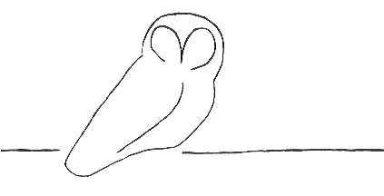

|
 |
Owl Monitoring SystemSensor Installation Manual |
From time to time, you might decide to change the queries being performed by the Owl sensors. This could be adding new queries to some or all of the sensors, stopping some of the queries from being performed, or modifying existing queries. Regardless of the changes, there are actions that must be taken on the Owl manager and all affected Owl sensors.
It is relatively painless to modify queries for a sensor. The following actions must be performed:
If you have correctly set up your configuration file, then owl-dnstimer will start collecting data for the new queries.
Stopping collection of certain queries only requires deleting (or commenting out) the appropriate entries from the configuration file. owl-dnstimer, of course, must be restarted.
|
Section 4. Adding Sensors |
Owl Monitoring System Sensor Installation Manual |
Section 6. Owl Sensor Commands |